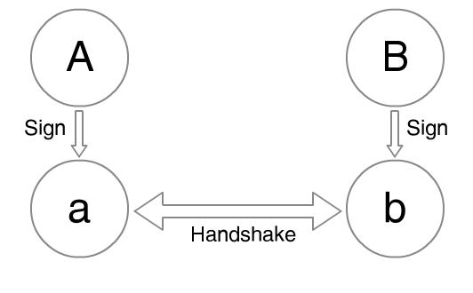
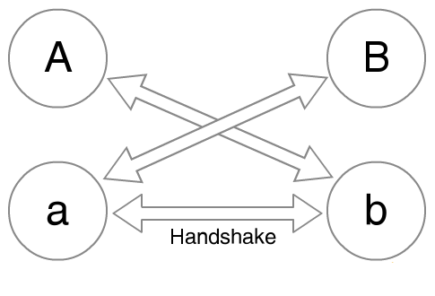

At Open Whisper Systems we help develop TextSecure, an encrypted chat application for Android. TextSecure was designed as a general purpose SMS/MMS client which would also automatically encrypt conversations when communicating with other TextSecure users. For those encrypted sessions, TextSecure uses a compact derivative of the well-known OTR protocol.
We’re currently in the process of transitioning TextSecure to use a device’s data channel as a transport for communication with other TextSecure users whenever possible. This enables communication with the upcoming TextSecure for iOS, helps users avoid SMS fees, and obscures conversation metadata from telcos.
The transition to a new transport is also a good opportunity for us to evaluate and introduce additional cryptographic protocol changes. Below is one cryptographic protocol change we’re thinking of making that we’d welcome feedback on.
OTR Today
One of OTR’s primary features is a property called deniability. If someone receives an OTR message from you, they can be absolutely sure you sent it (rather than having been forged by some third party), but can’t prove to anyone else that it was a message you wrote. This is a nice change compared to PGP signatures, for instance, where anyone who receives a PGP signed message can prove exactly who wrote it to anyone else.
Let’s see how this works. A simplified version of the initial OTR key exchange looks like this:

Each participant has a long-term identity key (A and B) that they use to sign an ephemeral key (a and b), which they exchange and use to calculate a shared secret. In reality, this initial exchange is more complex, since it actually happens inside another ephemeral key exchange (for privacy reasons), but this is the basic thrust of it.
The shared secret from this key exchange is used to derive a sending and receiving cipher key for each party, as well as a set of MAC keys for each party. Every transmitted message includes a MAC, which the message’s recipient can verify. Since the key used to construct and verify the MAC was derived from the shared secret, and since the shared secret was derived from a key exchange that was in turn signed by the sender’s long-term identity key, the recipient can be sure that the message was really constructed by their peer in the conversation.
The message is “deniable,” however, because the MAC keys are derived from a shared secret. Unlike PGP signatures, where the sender is the only person capable of producing the signature, the recipient of an OTR message is also capable of producing a sender’s MAC. This doesn’t compromise the integrity of the conversation for its participants, but does prevent a message’s recipient from revealing the MAC’d message to a third party as proof that it was produced by the sender, since it could have just as easily been constructed by the recipient themselves. Exactly what we want.
OTR’s deniability efforts don’t stop there, however. As a conversation progresses, OTR’s key material will continually roll forward (for ongoing forward secrecy), and every time a conversation’s MAC keys roll forward, OTR publishes the old ones onto the wire in the clear. The idea being that, given old MAC keys, any passive observer could technically modify old ciphertext and produce forged but valid MACs for it, which increases a message’s plausible deniability without compromising a conversation’s integrity (since those old MAC keys can’t be used for new messages).
Limitations
As implementers of a protocol that’s derivative of OTR, there are a few things that we haven’t been satisfied with.
Complexity
OTR uses a Diffie-Hellman key exchange of ephemeral keys, signed by long-term identity keys. While Diffie-Hellman is remarkably simple, DSA (used to calculate those identity key signatures) is not nearly as simple, and is often easy to fuck up. It’d be nice to avoid subjecting ourselves to that increased complexity if we can.
Additionally, publishing old MAC keys in the clear is a somewhat strange contortion for a protocol to make, and has a dangerous feeling associated with it. Ephemeral or not, it seems like it’d be ideal if all our secrets could remain secret. We’d be happy if it were possible for us to eliminate that added protocol complexity as well.
Limited Forgability
Presumably, OTR goes through the contortions of publishing old MAC keys to increase an old message’s forgability, which should strengthen that message’s deniability (if anyone could have forged it, it’s easier to deny). However, it’s not entirely clear how this works in practice.
It’s true that by publishing old MAC keys, anyone is capable of modifying the ciphertext of a previously observed message. However, even if that person can guess the plaintext and is capable of making predictable modifications to the ciphertext via a malleable encryption scheme, they still can’t demonstrate valid plaintext to anyone else without the cipher keys (and if they had those, they would be able to calculate the MAC keys anyway).
What’s more, since the initial OTR key exchange is signed and transmitted through an unobservable channel (an “outer” ephemeral key exchange), it’s not actually possible for anyone to produce what appears to be a conversation with you. Only people you’ve actually had a conversation with are in possession of a signed ephemeral key from you, and are thus the only ones capable of producing plaintext messages attributed to you. Publishing old plaintext MAC keys in the clear does not substantially increase this set of people’s ability to forge messages from you, since they are already in possession of the MAC keys.
So even after going through the contortions of publishing plaintext MAC keys, the set of people capable of producing forged messages from a sender is still just the set of people who’ve actually received messages from that sender.
Potential Simplifications and Improvements
The inimitable Trevor Perrin turned us on to a trick that we can use to greatly simplify and improve OTR’s deniability property. All it takes is modifying the initial key exchange from this:
To this:

This replaces two DSA signatures and one Diffie-Hellman exchange with three Diffie-Hellman exchanges. Each participant still has a long-term identity key (A and B) and an ephemeral key (a and b). However, instead of signing the ephemeral keys, participants simply exchange both unsigned keys (gA,ga) and (gB,gb) to calculate three shared secrets: gaB, gAb, and gab.
By then using all three shared secrets as one combined seed to the initial KDF, we accomplish the following:
- Reduced Algorithmic Complexity. We’ve eliminated DSA and have a nice authenticated key exchange that relies solely on the simplicity of Diffie-Hellman.
- Increased Forgability. Since there are no signatures involved, anyone could take A’s public key, make up an ephemeral keypair for A (“a” in the diagram above), combine that with their own identity key and ephemeral key (“C” and “c”), and produce an entire forged transcript – even if they’ve never had a conversation with “A” before. Now anyone is capable of easily producing a forged message from anyone else, whether they’ve actually had a conversation with them before or not.
- Reduced Protocol Complexity. Since anyone is capable of using only someone’s public identity key to produce an entire forged conversation, there is no need to publish old MAC keys in the clear any longer. Our secrets can remain secret, and we can eliminate that somewhat odd bit of protocol complexity.
- Maintained Forward Secrecy. Since an ephemeral handshake is part of the KDF seed, the compromise of an identity key will still never result in the compromise of previously transmitted ciphertext – or even passive observation of future ciphertext.
- Smaller Payloads. Instead of transmitting an identity key, an ephemeral key, and a signature during the handshake, one only needs to transmit an identity key and an ephemeral key, reducing the payload by the size of the signature (a significant amount for transports like SMS). Additionally, subsequent message payload sizes are also reduced, since broadcasting plaintext MAC keys is no longer necessary.
We found Trevor’s suggestion to have surprising results. With one small change to the initial key exchange, we can reduce its complexity (no more DSA), eliminate publishing old MAC keys in the clear, increase deniability by increasing forgability, and reduce payload size – all without increasing the number of round trips required or introducing any other additional complexity.
We’re currently looking at integrating this change into the next version of the TextSecure protocol, along with a number of other improvements for asynchronous communication that we’ll write more about later.
Moxie Marlinspike, 27 July 2013